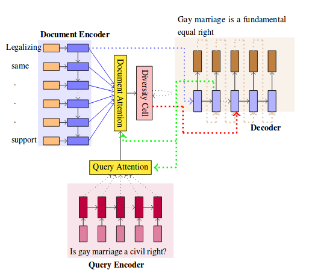
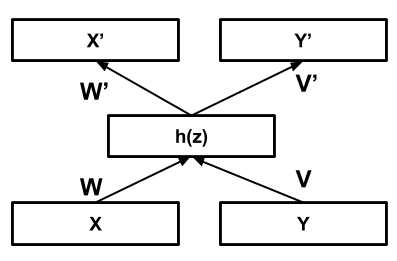

Recent publications
Diversity driven Attention Model for Query-based Abstractive SummarizationAssociation of Computational Linguistics (ACL), 2017Preksha Nema, Mitesh M. Khapra, Anirban Laha, Balaraman Ravindran |
|
|  |
Abstractive summarization aims to generate a shorter version of the document covering all the salient points in a compact and coherent fashion. On the other hand, query-based summarization highlights those points that are relevant in the context of a given query. The encode-attend-decode paradigm has achieved notable success in machine translation, extractive summarization, dialog systems, etc. But it suffers from the drawback of generation of repeated phrases. In this work we propose a model for the query-based summarization task based on the encode-attend-decode paradigm with two key additions (i) a query attention model (in addition to document attention model) which learns to focus on different portions of the query at different time steps (instead of using a static representation for the query) and (ii) a new diversity based attention model which aims to alleviate the problem of repeating phrases in the summary. In order to enable the testing of this model we introduce a new query-based summarization dataset building on debatepedia. Our experiments show that with these two additions the proposed model clearly outperforms vanilla encode-attend-decode models with a gain of 28\% (absolute) in ROUGE-L scores.
|
Correlational Neural NetworksNeural Computation, 2015Sarath Chandar, Mitesh M. Khapra, Hugo Larochelle, Balaraman Ravindran | |
|  |
Common Representation Learning (CRL), wherein different descriptions (or views) of the data are embedded in a common subspace, is receiving a lot of attention recently. Two popular paradigms here are Canonical Correlation Analysis (CCA) based approaches and Autoencoder (AE) based approaches. CCA based approaches learn a joint representation by maximizing correlation of the views when projected to the common subspace. AE based methods learn a common representation by minimizing the error of reconstructing the two views. Each of these approaches has its own advantages and disadvantages. For example, while CCA based approaches outperform AE based approaches for the task of transfer learning, they are not as scalable as the latter. In this work we propose an AE based approach called Correlational Neural Network (CorrNet), that explicitly maximizes correlation among the views when projected to the common subspace. Through a series of experiments, we demonstrate that the proposed CorrNet is better than the above mentioned approaches with respect to its ability to learn correlated common representations. Further, we employ CorrNet for several cross language tasks and show that the representations learned using CorrNet perform better than the ones learned using other state of the art approaches.
|
Older papers
-
Janarthanan Rajendran, Aravind S Lakshminarayanan, Mitesh M. Khapra, Prasanna Parthasarathy and Balaraman Ravindran: “Attend, Adapt, and Transfer: Attentive Deep Architecture for Adative Transfer from Multiple Sources in the Same Domain”. To appear in the Proceedings of the Fifth International Conference on Learning Representations (ICLR 2017), Toulon, France, April 2017.
-
Janarthanan Rajendran, Mitesh M. Khapra, Sarath Chandar, Balaraman Ravindran: Bridge Correlational Neural Networks for Multilingual Multimodal Representation Learning. In North American Association of Computational Linguistics (NAACL 2016), Atlanta, USA, June 2016, pp. 171–181.
-
Ruty Rinott, Lena Dankin, Carlos Alzate Perez, Mitesh M. Khapra, Ehud Aharoni, Noam Slonim: Show Me Your Evidence - an Automatic Method for Context Dependent Evidence Detection. In Proceedings of Empirical Methods in Natural Language Processing (EMNLP 2015), Portugal, September 2015, pp. 440-450.
-
A. P. Sarath Chandar, Stanislas Lauly, Hugo Larochelle, Mitesh M. Khapra, Balaraman Ravindran, Vikas C. Raykar, Amrita Saha, An Autoencoder Approach to Learning Bilingual Word Representations, Neural Information Processing Systems (NIPS 2014), Montreal, December 2014, pp. 1853-1861.
-
Mitesh M. Khapra, Ananthakrishnan Ramanathan, Anoop Kunchukuttan, Karthik Visweswariah, Pushpak Bhattacharyya, When Transliteration Met Crowdsourcing : An Empirical Study of Transliteration via Crowdsourcing using Efficient, Non-redundant and Fair Quality Control, Proceedings of the Ninth International Conference on Language Resources and Evaluation (LREC 2014), Reykjavik, Iceland, May 2014, pp. 196-202.
-
Mitesh M. Khapra, Ananthakrishnan Ramanathan, Karthik Visweswariah, Improving reordering performance using higher order and structural features, in North American Association of Computational Linguistics (NAACL 2013), Atlanta, USA, June 2013, pp. 315-324.
-
Karthik Visweswariah, Mitesh M. Khapra, Ananthakrishnan Ramanathan, Cut the noise: Mutually reinforcing reordering and alignments for improved machine translation, in Annual Meeting of the Association of Computational Linguistics (ACL 2013), Bulgaria, August 2013, pp. 1275-1284.
-
Mitesh M. Khapra, Salil Joshi, Arindam Chatterjee and Pushpak Bhattacharyya, Together We Can: Bilingual Bootstrapping for WSD , Annual Meeting of the Association of Computational Linguistics (ACL 2011) Oregon, USA, June 2011, pp. 561-569.
-
Mitesh M. Khapra, Salil Joshi and Pushpak Bhattacharyya, It Takes Two to Tango: A Bilingual Unsupervised Approach for Estimating Sense Distributions using Expectation Maximization , 5th International Conference on Natural Language Processing (IJCNLP 2011), Chiang Mai, Thailand, November 2011, pp. 695-704.
-
Mitesh M. Khapra, Raghavendra Udupa, A. Kumaran, and Pushpak Bhattacharya, P R + RQ ≈ P Q: Transliteration Mining Using Bridge Language, in American Association for Artificial Intelligence (AAAI 2010) , July 2010.
-
Mitesh Khapra, Anup Kulkarni, Saurabh Sohoney and Pushpak Bhattacharyya, All Words Domain Adapted WSD: Finding a Middle Ground between Supervision and Unsupervision, Conference of Association of Computational Linguistics (ACL 2010), Uppsala, Sweden, July 2010, pp. 1532-1541.
-
Harshada Gune, Mugdha Bapat, Mitesh Khapra and Pushpak Bhattacharyya, Verbs are where all the Action Lies: Experinces of Shallow Parsing of a Morphologically Rich Language, Computational Linguistics Conference (COLING 2010), Beijing, China, August 2010, pp. 347- 355.
-
Mitesh M. Khapra, Saurabh Sohoney, Anup Kulkarni and Pushpak Bhattacharyya, Value for Money: Balancing Annotation Effort, Lexicon Building and Accuracy for Multilingual WSD, Computational Linguistics Conference (COLING 2010), Beijing, China, August 2010, pp. 555-563.
-
Raghavendra Udupa and Mitesh M. Khapra, Transliteration Equivalence using Canonical Correlation Analysis, in European Conference on Information Retrieval (ECIR 2010), March 2010, UK, pp. 75-86.
-
Mitesh M. Khapra, A Kumaran and Pushpak Bhattacharyya. Everybody loves a rich cousin: An empirical study of transliteration through bridge languages, in North American Association of Computational Linguistics (NAACL 2010), June 2010, Los Angeles, USA, pp. 420-428.
-
Raghavendra Udupa and Mitesh M. Khapra. Improving the Multilingual User Experience of Wikipedia Using Cross-Language Name Search, in North American Association of Computational Linguistics (NAACL 2010), June 2010, Los Angeles, USA, pp. 420-428.
-
Mitesh M. Khapra, Sapan Shah, Piyush Kedia and Pushpak Bhattacharyya, Projecting Parameters for Multilingual Word Sense Disambiguation, Empirical Methods in Natural Language Processing (EMNLP 2009), Singapore, August, 2009, pp. 459-467.